20 photos · 4 cities · photo 1 (outlined) is the mosaic's large photo · generated 2026-11-08
Paris paris
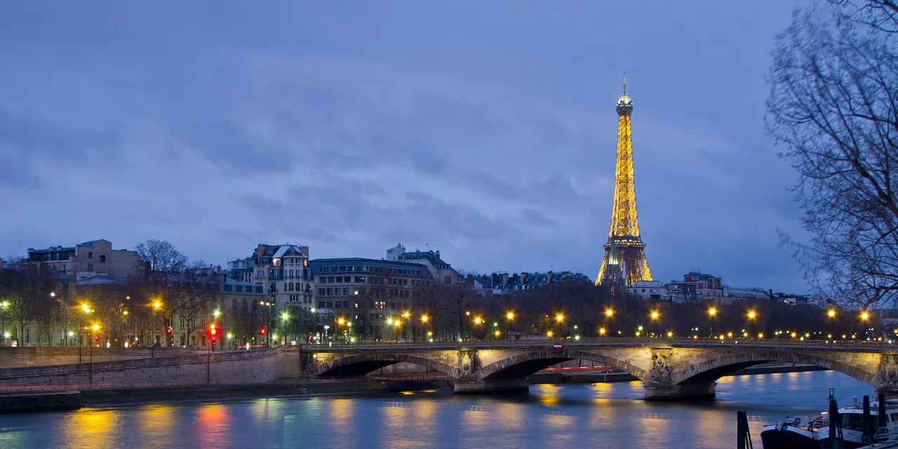
1. The Eiffel Tower lit up above the Seine and the Pont des Invalides at duskAlt: A golden lit iron tower rising behind a stone bridge over a river at blue dusk, with street lamps reflected in the waterCarlos Delgado · CC BY-SA 3.0 · Commons · 1280×640
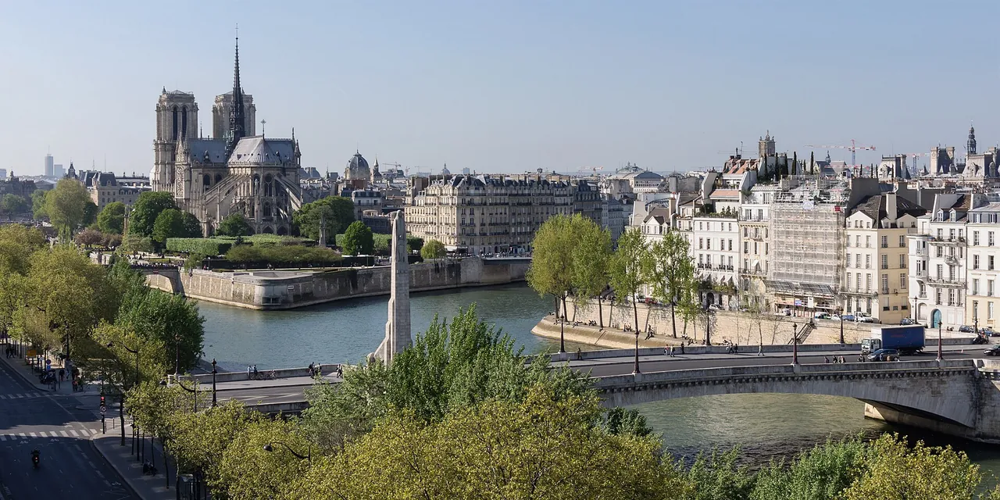
2. Notre-Dame above the Seine, with the Île Saint-Louis and the Pont de la TournelleAlt: A Gothic cathedral on an island in a river, with cream stone apartment buildings, trees and a bridge in spring sunshineMyrabella · CC BY-SA 4.0 · Commons · 1280×640
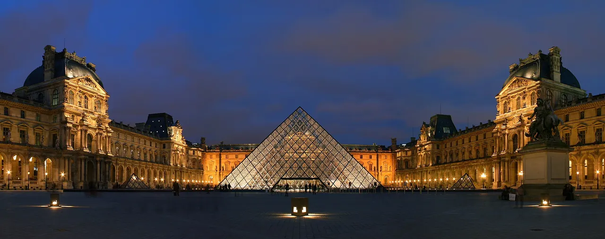
3. The Louvre's glass pyramid in the Cour Napoléon at night, one of the city's great museumsAlt: A lit glass pyramid in a paved courtyard surrounded by ornate palace wings at nightBenh LIEU SONG · CC BY 2.5 · Commons · 1280×508
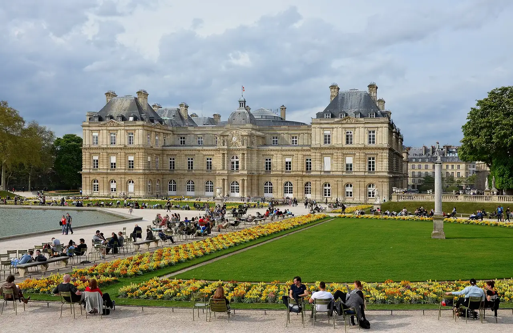
4. Afternoon in the Jardin du Luxembourg, below the Senate's palaceAlt: People sitting on green chairs among flower beds and lawns in front of a large stone palace under a cloudy skyJLPC · CC BY-SA 3.0 · Commons · 1280×831
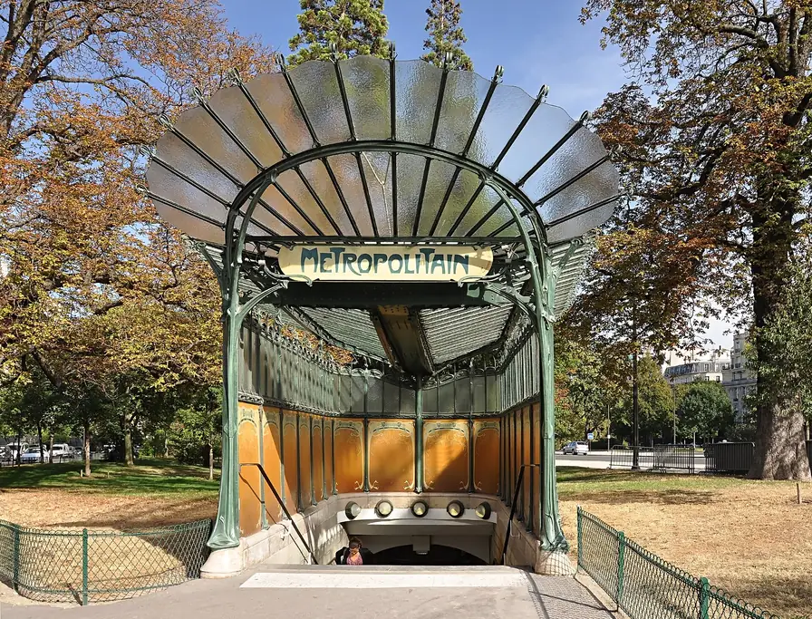
5. Hector Guimard's Art Nouveau Métro entrance at Porte Dauphine; the Métro reaches all of central ParisAlt: A green iron and glass Art Nouveau canopy marked Metropolitain over stairs leading down, among autumn treesMoonik · CC BY-SA 3.0 · Commons · 896×683
Zurich zurich
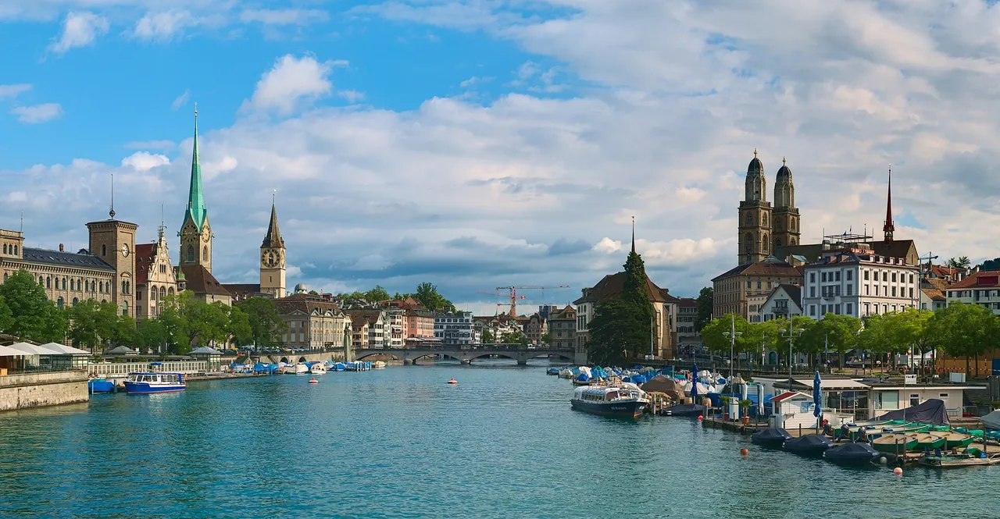
1. The Limmat with the Fraumünster and the twin towers of the Grossmünster, from the QuaibrückeAlt: A wide turquoise river lined with moored boats, with a green-spired church on the left and a twin-towered church on the right under a bright cloudy skyDaniel Kraft · CC BY-SA 3.0 · Commons · 1280×665
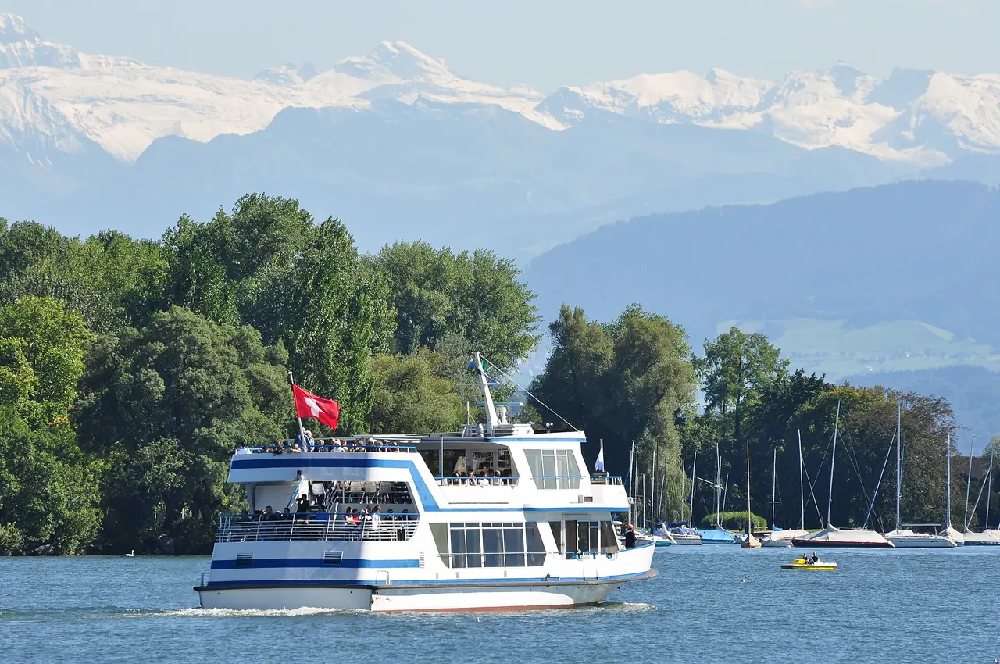
2. A lake steamer on Lake Zurich, with the snow-capped Glarus Alps beyondAlt: A white passenger boat flying a Swiss flag on a blue lake, with trees, moored sailboats and snowy mountains in the distanceRoland zh · CC BY-SA 3.0 · Commons · 1280×850
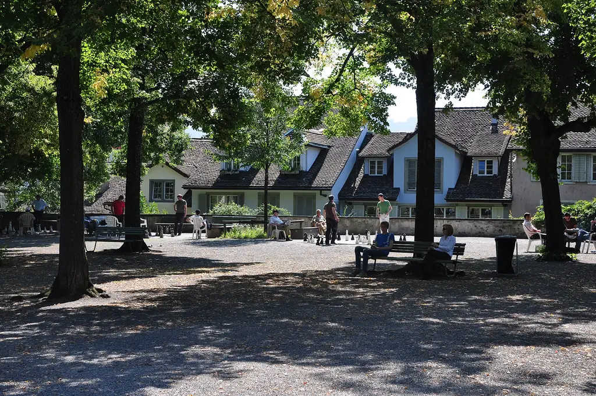
3. The Lindenhof, a quiet tree-shaded square on the old town's hill above the LimmatAlt: A gravel square shaded by tall lime trees, with people on benches and at a giant chess board in front of old houses with steep tiled roofsRoland zh · CC BY-SA 3.0 · Commons · 1024×680
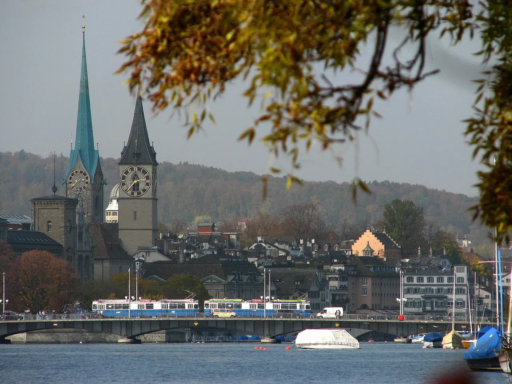
4. Trams crossing the Quaibrücke below the Fraumünster and St. Peter; trams and S-Bahn trains serve the whole cityAlt: Two blue-and-white trams on a low bridge over the lake outlet, with a green-spired church, a large church clock tower and old-town roofs behind, framed by autumn leavesRoland zh · CC BY-SA 3.0 · Commons · 1280×960
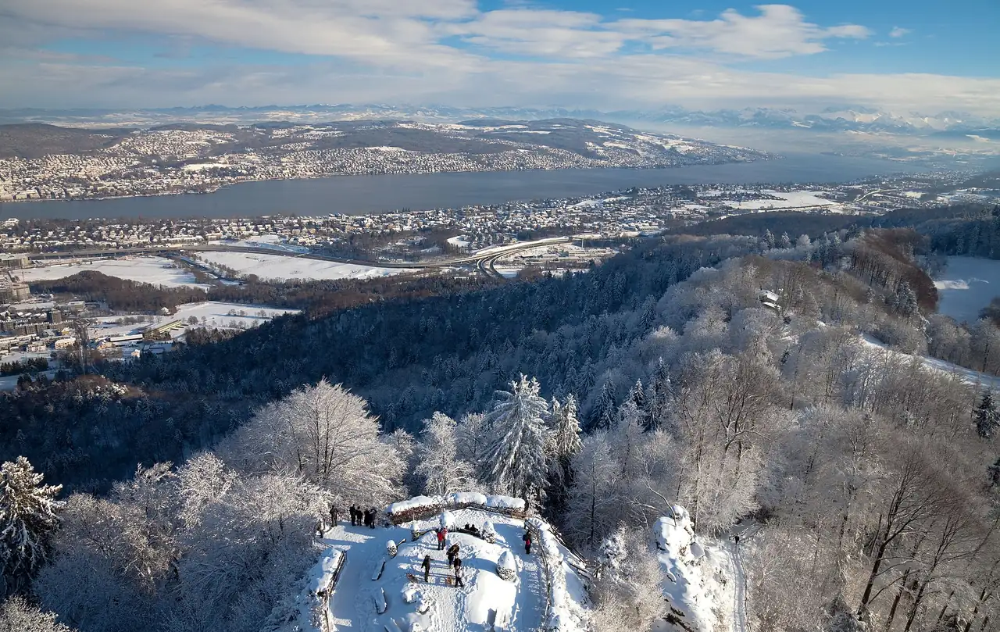
5. Winter view from the Uetliberg over Lake Zurich to the AlpsAlt: Snow-covered forest on a hilltop viewpoint with a few people, looking down over a city and a long lake toward snowy mountainsMurdockcrc · CC BY 3.0 · Commons · 1280×809
Dubai dubai
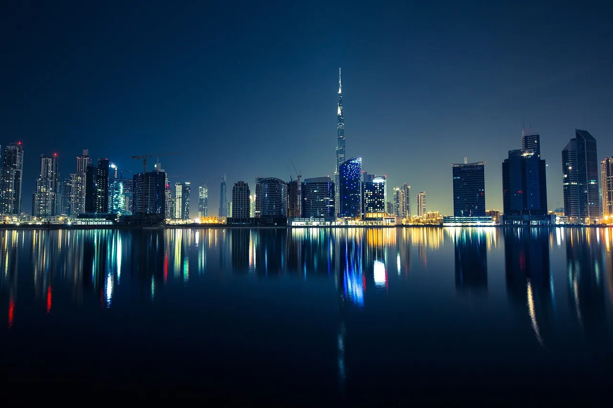
1. The Burj Khalifa and the Business Bay towers at night, reflected in the waterAlt: A night skyline of lit skyscrapers led by a very tall needle-like tower, mirrored in still dark waterRobert Bock · CC0 · Commons · 1280×853
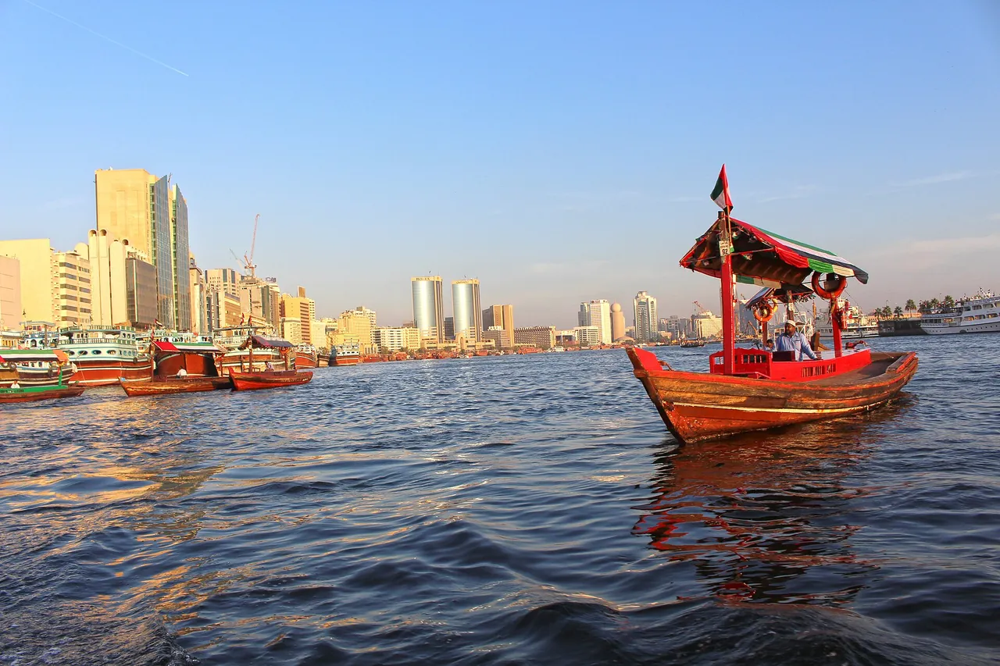
2. An abra water taxi crossing Dubai Creek toward Deira, the old trading heart of the cityAlt: A small red wooden boat with a canopy and a UAE flag crossing a creek, with moored dhows and mid-rise buildings on the far bank in late sunShahid1024 · CC BY-SA 4.0 · Commons · 1280×853
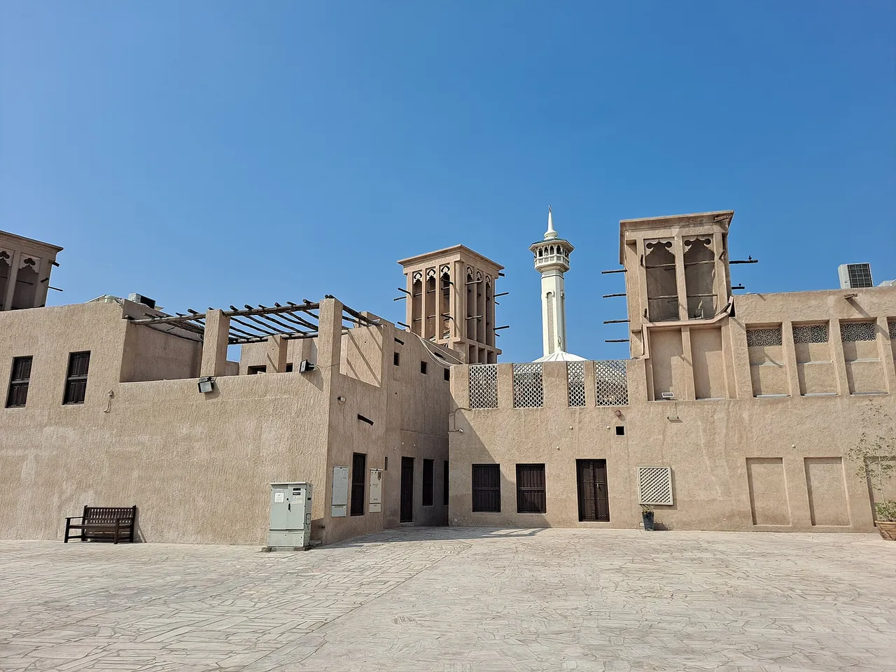
3. Wind towers and a minaret in Al Fahidi, the restored old quarter of Bur DubaiAlt: Sand-coloured traditional houses with square wind towers and a white minaret around an empty paved courtyard under a clear blue skyEditQ · CC0 · Commons · 1280×960
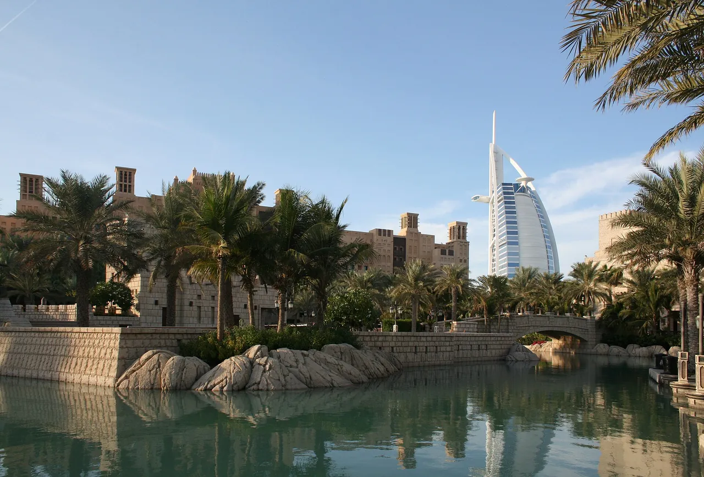
4. Madinat Jumeirah's canals and palms, with the Burj Al Arab behindAlt: A canal lined with palm trees and sand-coloured buildings with wind towers, with a sail-shaped hotel tower in the backgroundDiego Delso · CC BY-SA 4.0 · Commons · 1280×867
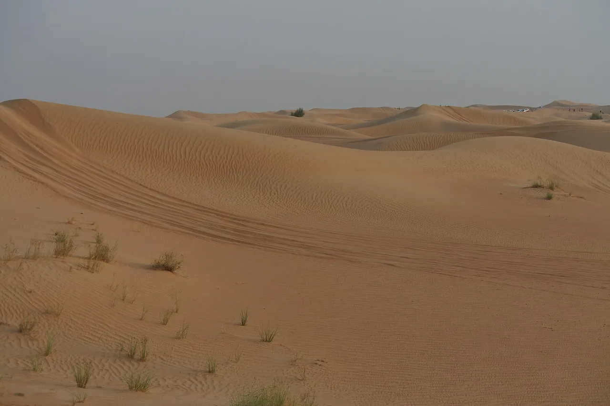
5. Desert dunes outside the city in haze; from May to September highs pass 40°CAlt: Rolling orange sand dunes with sparse grass tufts and tyre tracks under a hazy grey skyflightlog · CC BY 2.0 · Commons · 1280×853
Cape Town cape-town
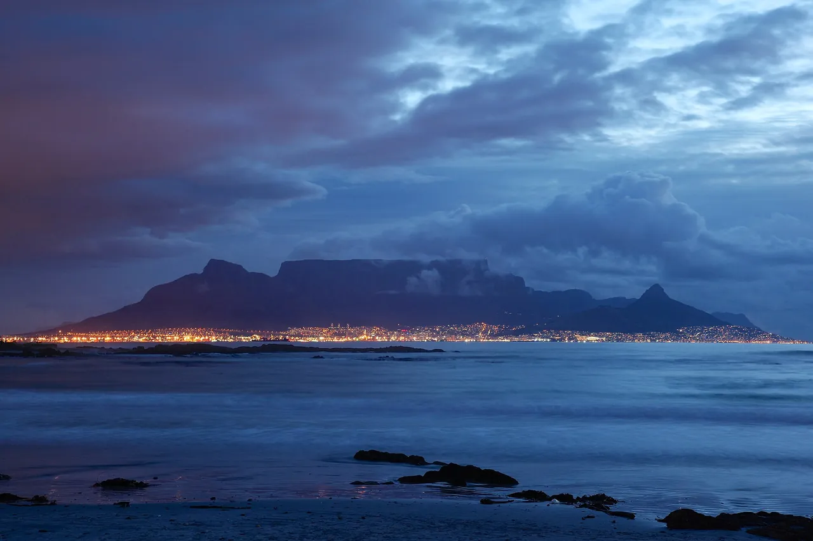
1. Table Mountain and the lights of Cape Town at dusk, from Bloubergstrand across Table BayAlt: A flat-topped mountain silhouetted against a stormy blue dusk sky, with a line of city lights at its foot across a bayLeo za1 · CC BY-SA 3.0 · Commons · 1280×853
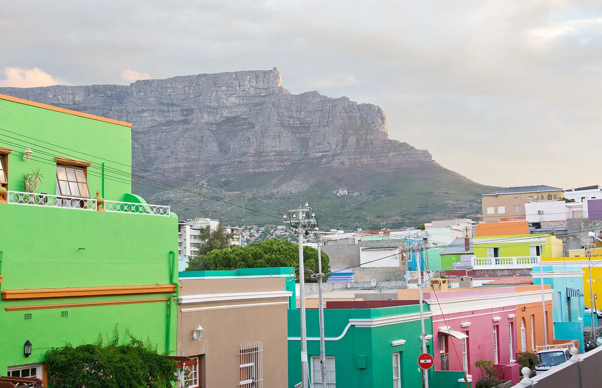
2. The brightly painted houses of the Bo-Kaap below Table MountainAlt: Rows of green, pink, turquoise and yellow houses in the foreground with a sheer grey mountain face behindBarry haynes · CC BY-SA 4.0 · Commons · 1280×828
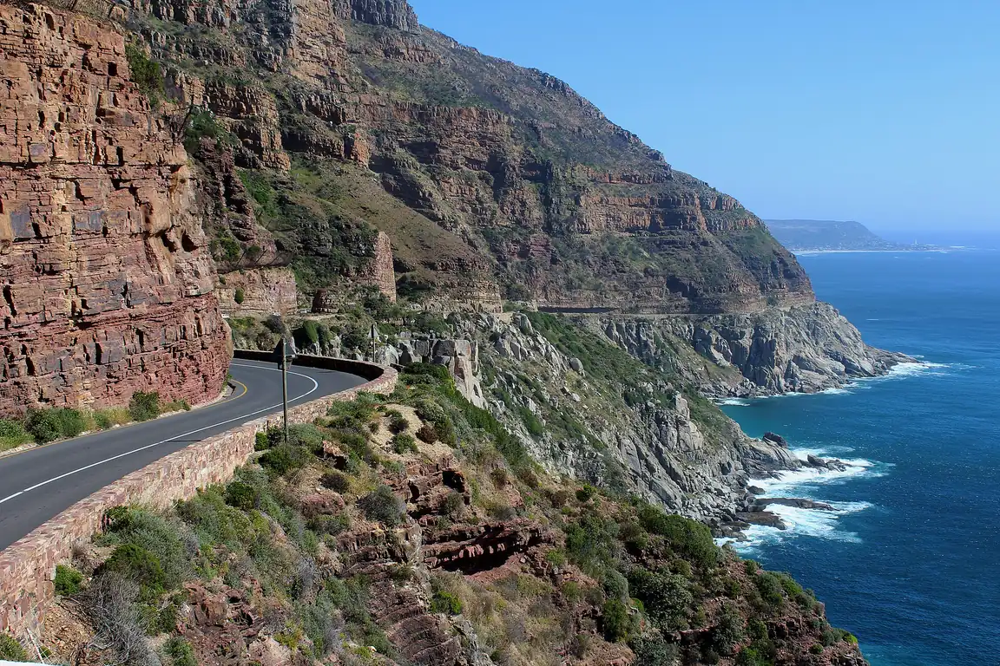
3. Chapman's Peak Drive, cut into the cliffs above the Atlantic near Hout BayAlt: A narrow road curving along red sandstone cliffs high above a deep blue ocean and rocky shoreMartinvl · CC BY-SA 4.0 · Commons · 1152×768
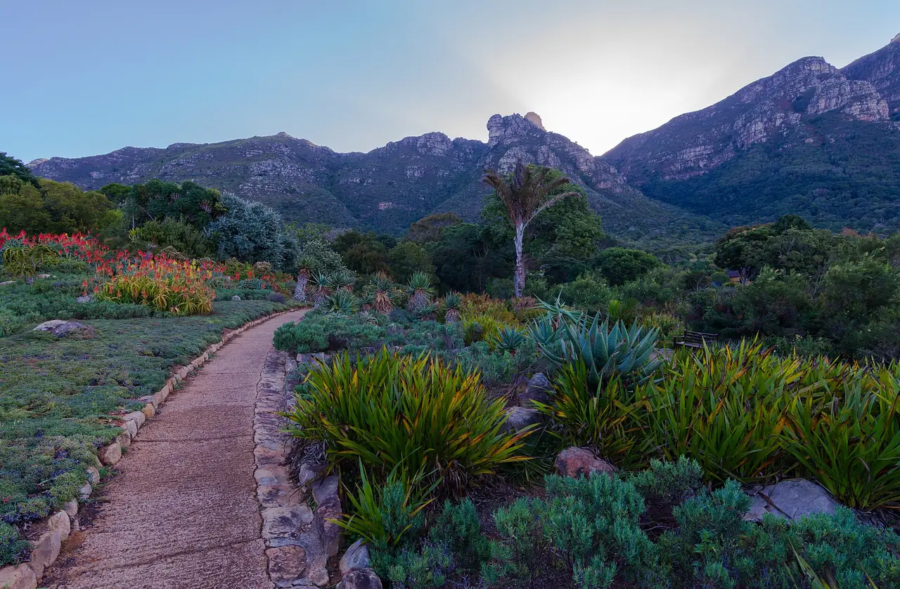
4. Kirstenbosch National Botanical Garden on the eastern slopes of Table MountainAlt: A paved path through beds of aloes, grasses and fynbos plants toward rocky mountain slopes at duskMattias Hill · CC BY-SA 3.0 · Commons · 1280×839
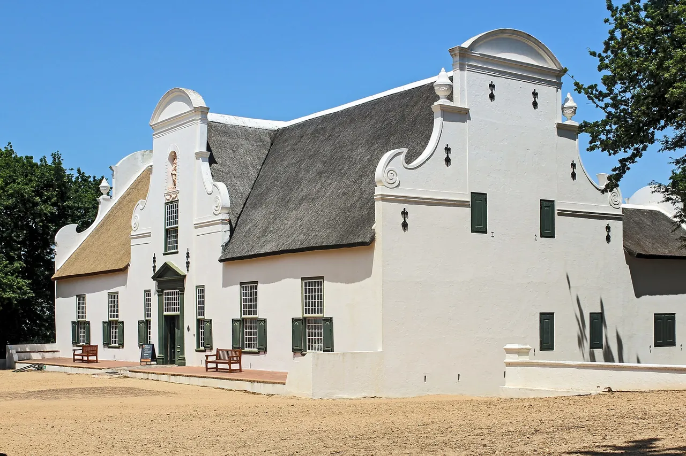
5. The Cape Dutch manor at Groot Constantia, South Africa's oldest wine estateAlt: A white thatched-roof manor house with curved gables and green shutters on a sunny dayMartinvl · CC BY-SA 4.0 · Commons · 1280×853


_Porte_Dauphine_Paris_16e_002.jpg){kind=link}